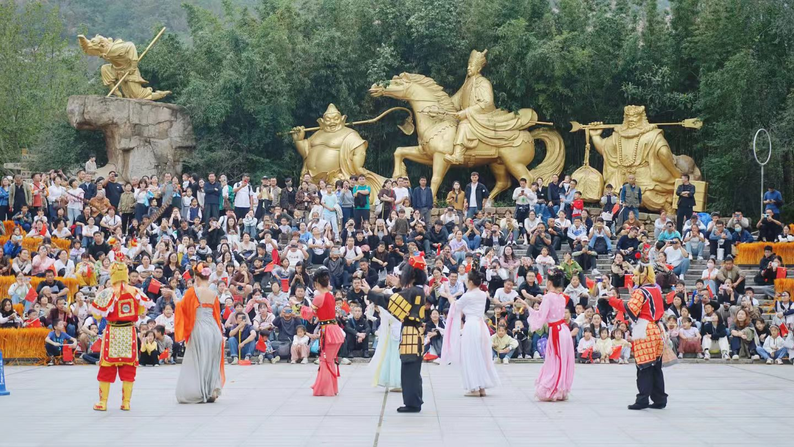

西游文化
立体"西游记全书" · 全国知名西游文化研学基地

嵖岈山是公认的《西游记》灵感发源地，整座山体如同一部立体"西游记全书"，山石洞穴皆对应书中经典桥段，西游文化贯穿景区千年文脉。
创作溯源：吴承恩与嵖岈山
明代文学家吴承恩途经嵖岈山避祸，山中天然形成的睡唐僧、醉八戒、白龙马、老君花园、高老庄等奇石景观，为他打开创作思路。他隐居山中吴公洞，以山石传说、民间神话为素材，完成旷世名著《西游记》初稿。唐代高僧玄奘西行前也曾多次到嵖岈山雷音寺讲经，两位弟子均为本地乡人，为西游故事埋下历史根基。
影视根基：西游记续集拍摄地
1998年杨洁导演带领原版师徒四人团队，全程在嵖岈山拍摄《西游记续集》，石猴出世、黑风洞夺袈裟、天磨湖渡河等经典镜头均取自此地。导演杨洁评价：嵖岈山是西游记天然实景舞台，不用搭建布景，一步踏入神话世界。
全域西游氛围
景区打造完整西游文化体系：遍布山间的西游象形奇石、吴公洞纪念馆、西游主题演艺、文创街区、师徒巡游互动，从自然景观到人文展览全方位还原西游故事，是全国知名西游文化研学基地。